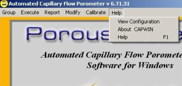
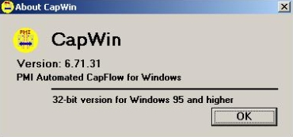

Starts the CAPWIN Help System.
This option displays the porometer's Configuration Screen. It lists the hardware components installed and the ranges of each. The maximum flow calibrations are also shown, if available.
The data shown on this screen is taken directly from the CAPWIN.INI file. Click OK to return to the Capwin Main Screen.
This option displays a box that contains information on the CAPWIN Software System (title, version number, etc.).
| Back | Next |